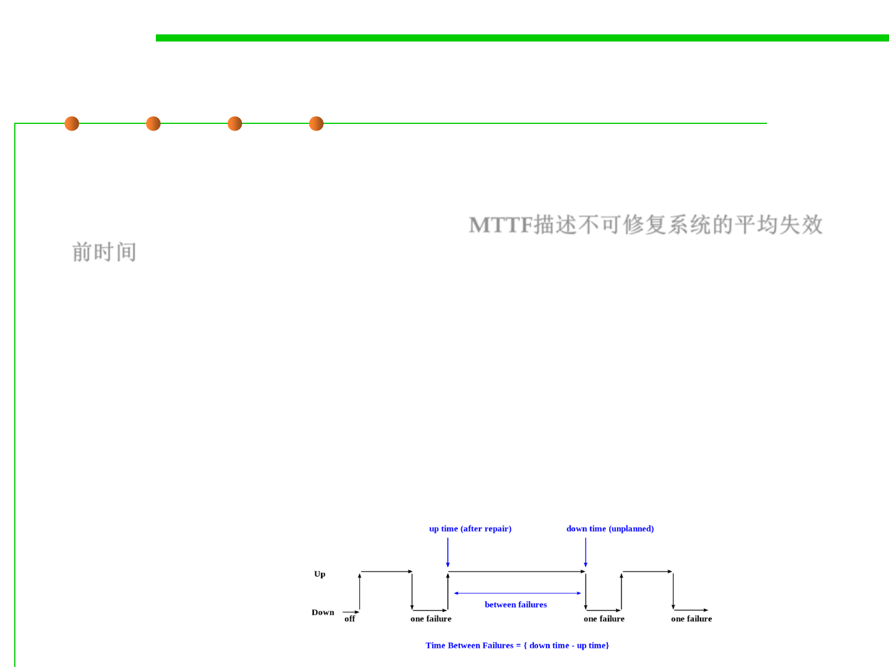

7.1 Robustness & Correctness
Mean time between failures (MTBF)
▪ Mean time between failures (MTBF) is used for repairable systems,
while mean time to failure (MTTF) denotes the expected time to
failure for a non-repairable system. MTTF描述不可修复系统的平均失效
前时间
▪ MTTF=Σti / Σri
– ti :在发生所有故障之前的工作时间，ri:故障发生次数
– For example, three identical systems starting to function properly at time 0
are working until all of them fail. The first system failed at 100 hours, the
second failed at 120 hours and the third failed at 130 hours.
– The MTBF of the system is the average of the three failure times, which is
116.667 hours. If the systems are non-repairable, then their MTTF would
be 116.667 hours.